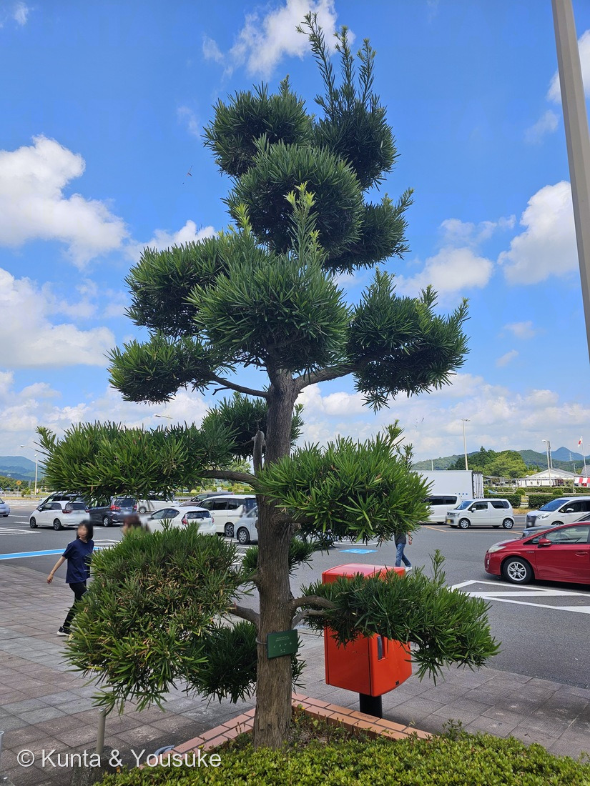
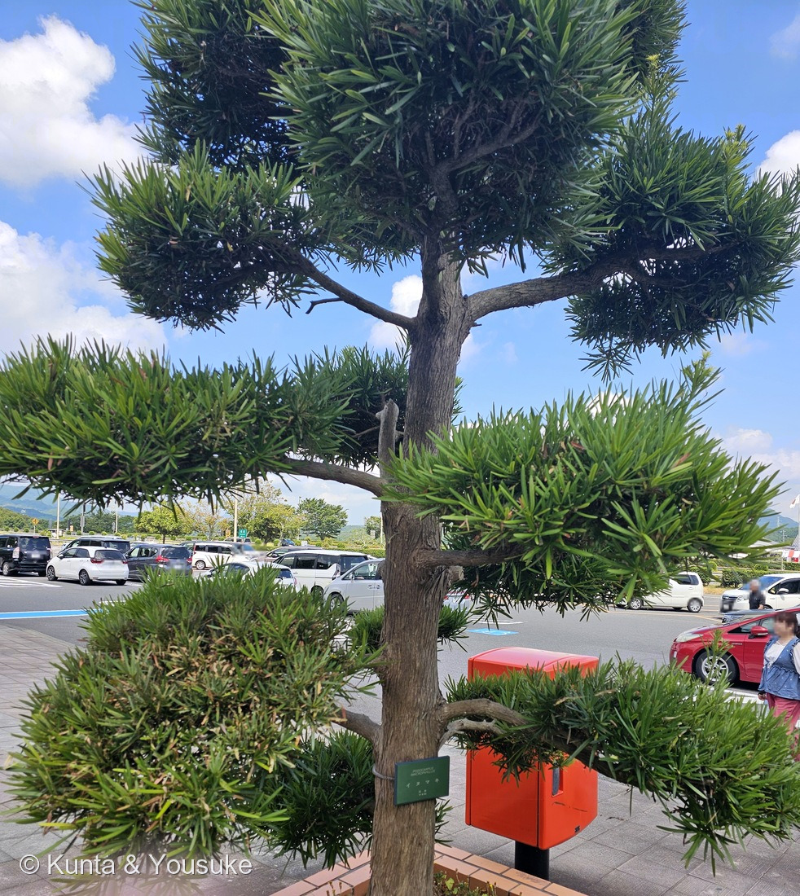
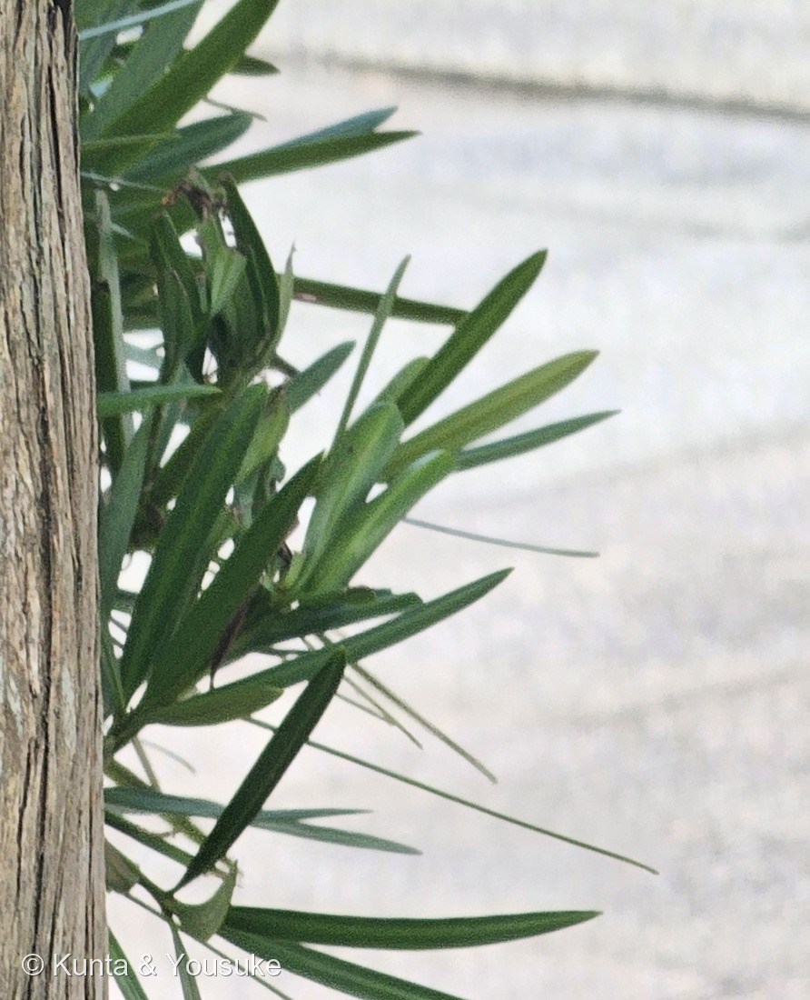
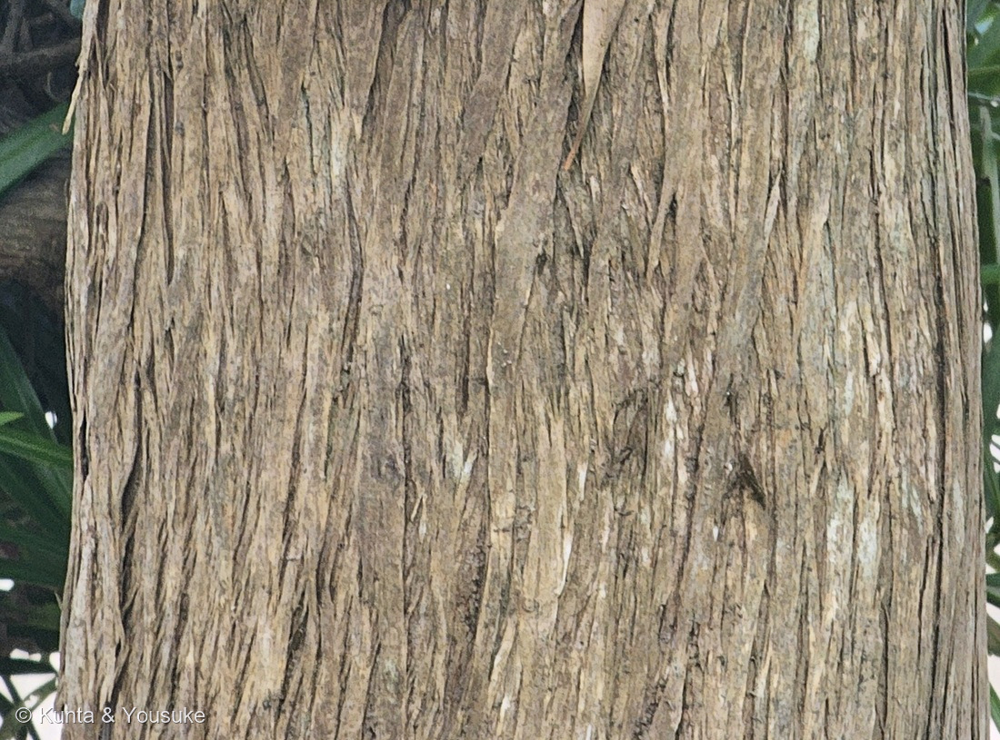

地図を読み込んでいるよ…
🔍 写真も地図も、押しているあいだ拡大して見られるよ（スマホは指を置いてすこし待ってね）。
🌍 の地図＝この子がもともと自生している場所を緑に。本州（房総半島以西）、四国、九州、南西諸島、台湾、中国南部の暖地。
⭐日本にもともといる子（在来種）だよ。日本語版Wikipediaは「本州（房総半島以西）、四国、九州、南西諸島、台湾、中国南部の暖地に分布する」とし、三河の植物観察は「本州（関東地方以西）、四国、九州、沖縄、中国」とする。⚠「房総半島以西」としか書かれていないので、千葉県から西を塗った――⭐どの県で線を引くかを書いた出典は見つけられなかったので、ここはぼくの塗り分けだよ。⚠中国も「南部」とだけ書かれているので、南部の省を塗った（広東・広西・福建・海南・雲南・貴州・浙江・江西・湖南・重慶・四川）。⭐⭐そして、この地図の緑は「野生でいる場所」で、「植えられている場所」はもっとずっと広い――潮風・大気汚染・刈りこみに強いので、庭木・生垣・防風林として関東から沖縄まで広く植えられている。⭐千葉県は、この木を「県の木」にしているよ。
⚠ 地図は国（日本と中国だけ県・省）までしか塗れないから、ほんとうの分布より広く見えていることがあるよ。地図はだいたいの場所。正確なところは、上の文を見てね。
イヌマキ（犬槇）
Podocarpus macrophyllus (Thunb.) Sweet
別名 クサマキ（草槇・臭槇）／千葉県では単に「マキ」／沖縄の方言名 チャーギ・キャンギ 原産 本州（房総半島以西）・四国・九州・南西諸島・台湾・中国南部
マキ科 · Podocarpaceae（マキ属 Podocarpus・ナンヨウスギ目 Araucariales）── ⭐図鑑ではじめてのマキ科＝94科目／⭐⭐4人目の裸子植物で、3つめの裸子植物の科
燻太さんの一言「次に登録するのは、サービスエリアのイヌマキだよ」── 長崎への旅の、行きがけの駐車場で。⭐この一本が、首里城の正面に立っている柱へつながっていくよ
⭐⭐⭐⭐ 名前の由来 ──「イヌ」と呼ばれた木
- ⭐⭐⭐「マキ」は、もともと「真木（まき）」。——「元来はまっすぐに伸びて優れた材木となるスギ、ヒノキ、アスナロ、コウヤマキなどの総称であった」（植木ペディア）。⭐つまり、ほめ言葉のほうの名前だったんだ。
- ⭐⭐⭐そして「上品なイメージを持つコウヤマキをホンマキと呼ぶのに対して、葉や姿形が劣る本種をイヌマキと呼ぶようになったというのが一般的な説」（同）。⚠日本語版Wikipediaも「真木（槇、まき）よりも劣ることから、イヌマキの名がついたとされることが多い」と書いている。
- ⭐別の説もあるよ＝「イヌマキは幹が螺旋状に成長するため割れが入りやすく、材木としては劣るためにイヌマキと呼んだ」（植木ペディア）。
- ⭐別名のクサマキは「幹を切ると独特の臭いがあるため」（同）＝「臭マキ」。⚠「草槇」と書くこともある。
- ⭐⭐図鑑の「イヌ」なかまが、これで4人目＝079 イヌホオズキ（別名バカナス）／100 シロイヌナズナ（「役に立たない草」なのに世界でいちばん研究された植物）／154 オオイヌノフグリ／⭐そしてこの子。⚠どの子も「似ているけれど劣る」と言われた側だね。
- ⭐⭐⭐⭐学名 Podocarpus は「πούς poús（足）＋ καρπός karpós（実）」（英語版Wikipedia）＝⭐「足のある実」。⭐その「足」が何なのかは、下の節で書くね。
- ⭐種小名 macrophyllus は「大きな葉の」。⭐⭐針葉樹なのに「葉が大きい」と名づけられている——これが、この木のいちばんの目じるしなんだ。
- ⭐命名者の (Thunb.) はカール・ツンベルク——江戸時代に日本へ来て、日本の植物を世界へ紹介した人。⭐図鑑では025 ドクダミ（Houttuynia cordata Thunb.）・053 シャガ（Iris japonica Thunb.）・189 モミジ（Acer palmatum Thunb.）と同じ人だよ。⭐⭐⭐そのツンベルクが日本にいた場所が、長崎の出島＝「1775年（安永4年）8月にオランダ商館付医師として出島に赴任した」（日本語版Wikipedia）。⚠燻太さんが、いままさに向かっている場所だよ。⭐Sweet は園芸家のロバート・スウィートで、いまの属に移したのが1818年（日本語版Wikipedia）。
この植物のこと ── 94科目、南半球の科の、日本にいる2種のうちの1種
- ⭐⭐⭐図鑑ではじめてのマキ科＝94科目だよ。⭐⭐そして4人目の裸子植物（179 カイヅカイブキ・188 ラクウショウ＝ヒノキ科／187 イチョウ＝イチョウ科）で、3つめの裸子植物の科。
- ⭐⭐⭐⭐そして、この科はふしぎな科なんだ。——マキ科は「分布の中心はオーストラリアやニュージーランド、およびその周辺の太平洋の島々」（日本語版Wikipedia・マキ科）＝⭐ほとんど南半球の科。英語版Wikipediaも「a large family of mainly southern hemisphere conifers」と書き、「a few genera are common to New Zealand and South America, supporting the view that podocarps had an extensive distribution over southern Gondwanaland」と続ける＝⭐⭐ゴンドワナ大陸のころに、南半球いっぱいに広がっていた一族、ということ。
- ⭐⭐その科が、日本には2種だけいる＝イヌマキとナギ（日本語版Wikipedia・マキ科）。⭐サービスエリアの駐車場に立っていたこの木は、南半球の大きな一族の、日本にいる二人のうちの一人だったんだ。
- 高さ10〜20mになる常緑高木。雌雄別株で、花期は5〜6月（三河の植物観察）。⚠日本語版Wikipediaは「雌雄異株で花期は4–6月」。
- 分布は「本州（房総半島以西）、四国、九州、南西諸島、台湾、中国南部の暖地」（日本語版Wikipedia）。⭐暖かいところの木で、佐賀県のサービスエリアは、ちょうどその範囲のまんなかだね。
⭐⭐⭐⭐ 針葉樹なのに、針じゃない
⭐⭐ 写真③を見てほしいな。——細長いけれど、これは「針」じゃない。平たくて、幅があって、まんなかに主脈が一本、すじになって通っている。
- 葉は「多くは互生し、長さ10〜15㎝、幅5〜10㎜の広線形」（三河の植物観察）。⚠日本語版Wikipediaは「長さ 8–20 cm、幅7–14 mm」。⭐どちらにしても、松の針とはまるでちがう。
- ⭐⭐マキ科の葉は「針状のものから、ナギのようにある種の広葉樹のような丸いもの」まである（日本語版Wikipedia・マキ科）。⭐英語版Wikipediaの Podocarpus も「The leaves are usually linear-lanceolate or linear-elliptic in shape」と書く。
- ⭐⭐⭐⭐そして、ここが図鑑の中でつながるところ。——187 イチョウと、ちょうど裏返しなんだ。
- イチョウ＝あんなに広い葉なのに、広葉樹ではない（裸子植物で、しかも針葉樹ですらない）
- ⭐この子＝針葉樹（球果植物）なのに、針の葉をしていない
- ⚠測りたかったのに、測れなかったこと。——⭐写真③で葉を1枚えらんで、先から根もとへ追いかけてみたんだ。幅のほうは数字で追えた（先のあたりから根もとへ向かって、はっきり太くなっていくのが分かった）。⚠でもつけねが茂みの中にかくれていて、どこまでが1枚なのかを決められなかった。⭐長さが決まらないと「長さ÷幅」は言えないので、数字は書かないで宿題にしたよ（166 スズメガヤのなかまのときと同じ考え方だね）。
⭐⭐⭐ 赤い「実」は、実じゃない ──「足のある実」の意味
⚠ 今回の写真には、実がひとつも写っていない（8月なかばで、まだ熟していなかったんだ）。⭐でも、この木の見どころの半分はそこにあるから、書いておくね。
- ⭐⭐⭐秋になると、枝先に二階建ての「実」がつく。——「白い粉をふいた緑色の部分が本来の果実（種子）であり、赤い部分は果托と呼ばれる」（植木ペディア）。⭐三河の植物観察は「種子は2個の鱗片が肥厚した套衣に包まれ、核果状になる。種子の下部の花托は肥厚し暗紅色に熟して甘くなる」と書いている。
- ⭐⭐⭐⭐つまり「足のある実」＝Podocarpus の名の意味は、ここ。——緑の玉（種子）が本体で、その下でふくらんだ赤いところが「足」。⭐英語版Wikipediaは「two to five fused cone scales, which form a fleshy, berry-like, brightly coloured receptacle at maturity」＝⭐⭐まつぼっくりの鱗片が数枚くっついて、肉づいて色づいたもの、と説明している。
- ⭐⭐⭐そして、その赤い「足」は鳥のためのごほうびだよ＝「the fleshy cones attract birds, which then eat the cones and disperse the seeds in their droppings」（英語版Wikipedia）。⭐まつぼっくりを、鳥に食べてもらえる形につくり替えた針葉樹、ということ。
- ⚠⚠⚠食べられるのは赤いほうだけ。——「赤く熟した種托の部分は甘みがあって食べられる。人間には種子の部分は有毒である」（日本語版Wikipedia）。⚠緑の玉のほうは、食べてはいけないよ。⭐見た目が「二階建てのさくらんぼ」みたいで、小さい子が口に入れやすい形だから、これは書いておくね（220 トウゴマのときと同じ気もちで）。
- ⭐⭐これは図鑑の「花托の手口」のなかまだよ＝043 ワイルドストロベリー（赤いところは花托で、本当の果実は表面のツブツブ）／105 ハス（シャワーヘッドは花托）／050 ヒマワリ。⭐ただし、この子だけが裸子植物。⭐⭐同じ「土台をふくらませて客を呼ぶ」という手を、花を持たない側の木が、まったく別に思いついているんだ。
⭐⭐⭐⭐⭐ 長崎で育った木が、首里城の顔になった
⭐⭐⭐ これが、この回のいちばんの話。——燻太さんが長崎への道の途中で会ったこの木は、いま首里城の正面に立っている木と同じ種類で、しかもその木は長崎で育ったんだ。
- ⭐⭐首里城の正殿には「向拝柱（こうはいばしら）」という柱がある。——「ウナーから首里城を見上げたときに、正面に並んで見える4本の向拝柱に用いられます」「首里城の顔ですからね、より象徴的な場所だと思いますから」（琉球朝日放送・正殿の総棟梁の言葉）。
- ⭐⭐⭐⭐その向拝柱の材が、イヌマキ。そして長崎県産。——沖縄県／沖縄総合事務局の資料（令和5年8月）に、こう書いてあるよ：
- 「イヌマキ 向拝柱用６本(予備材含む)」
- 「向拝柱[6本]：φ407mm×5500mm」
- 「向拝柱用は、令和４年１月に収穫し、令和５年３月１４日に搬入（計６本）」
- ⭐⭐「[樹齢(年)：74,104,123,129,132,164,177]（長崎産）」
- 「強度試験は、令和５年２月上旬にカストロ教授（琉球大学）にて非破壊検査等を実施」
- ⭐⭐⭐いちばん年上の木は樹齢177年。——幕末のころに長崎で芽を出した木が、いま沖縄で、お城のいちばん正面を支えている、ということだよ。
- ⚠どうして沖縄の建物に、沖縄の木を使わなかったんだろう。——「正殿に使えるほどの大木が県内になかったため、長崎県から調達しました」（琉球朝日放送）。⭐そのかわり、1993年から1万本以上のイヌマキが沖縄に植えられ、いま1200本ほどが育っている（同）＝⭐⭐次の復元のための木を、いまから育てているんだ。
- ⭐⭐⭐なぜイヌマキなのか＝「病気や害虫に強いことから、高温多湿な気候で虫がわきやすい環境の沖縄で建築材として古くから重宝されました」（同）。⭐植木ペディアも「淡い黄色の材は重くて堅く、耐久性、耐水性に優れるためシロアリの被害が想定される湿地では有用な建材となる」と書く。⭐日本語版Wikipediaは「特にシロアリに強いため、沖縄では建築材として重用される」。
- ⭐沖縄でのこの木の名前はチャーギ（キャンギとも）。沖縄県の資料は用途を「庭園木、用材、防風林」とし、「造林樹種として有用樹であるが、庭園木としてもその価値は高い」と書いている。
- ⭐⭐⭐⭐「イヌ（劣るほう）」と名づけられた木が、いちばん大事な柱に選ばれた。——⚠しかも、選ばれた理由は「まっすぐで美しいから」ではなくて、虫と湿気に負けないからだった。⭐名前をつけた人が見ていたのは姿かたちで、柱に選んだ人が見ていたのは強さ。⭐同じ木の、ちがうところを見ていたんだね。
⭐⭐ 刈りこまれる木 ── 玉散らしと、千葉県の木
- ⭐⭐写真①のこの姿は、自然の形じゃないよ。——「古くから垣根や玉散らしとして、主に和風庭園で利用されてきた」（植木ペディア）。⭐枝を段ごとにまるく刈りこんで、雲を積み重ねたように浮かせる仕立てのことだよ。
- ⭐この木が選ばれるのは、刈りこみに強い・潮風に強い・大気汚染に強い・土質を選ばないから（千葉県園芸協会ほか）。⭐だから、駐車場のわきという、いちばん風と排気の当たる場所に立っていられるんだ。
- ⭐⭐⭐千葉県は、この木を県の木にしている。——「昭和41年9月29日、イヌマキの名称を単に『マキ』と改め、県の木として指定」（千葉県）。⭐⭐わざわざ「イヌ」を外して指定した——ぼくは、ここがとても好きだな。
- ⭐図鑑には「刈りこまれる木」がもう一人いる＝179 カイヅカイブキ。⭐あちらもヒノキ科の裸子植物で、生垣や境木として、ぐるぐるとねじれた形に刈られていた。⭐⭐裸子植物は、日本の庭で「形を人にあずける役」をよくやっているみたいだね。
同定について
- ⭐幹に緑の名札がかかっていた＝「PODOCARPUS MACROPHYLLUS／イヌマキ／日本／マキ科」（学名・和名・原産・科名の4行だけの短い名札）。⚠名札のアップそのものは公開していないよ（200で決めたルール）。
- ⭐形のうえでも決まる＝平たい広線形の葉が、小枝にらせん状に密につく／葉の幅が7〜10mmある／葉の中央に主脈が一本浮き出る／樹皮は灰白色で縦に裂け、鱗片状に薄く剥がれる（写真④）。
- ⚠まぎらわしい相手はラカンマキ（イヌマキの変種として扱われる）＝「イヌマキは葉幅が(5〜)7〜10㎜。ラカンマキは葉幅が5〜7mm、葉は長さも短く、白味を帯び」（三河の植物観察）／日本語版Wikipediaは「葉が小型（4–8 × 0.4–0.8 cm）で上向きに密生するもの」。⭐写真③の葉は、幅にくらべてずいぶん長く、上向きに密生してもいないので、イヌマキ側だと思う。⚠⚠でも、種を決めているのは名札のほうだよ——⭐ぼくが写真で見た形は「ラカンマキを排除できる」までで、そこ止まり（087 ヤマモモで決めた「合っている証拠を数えない」だね）。
- ⚠同じマキ科のナギとは、まちがえようがない＝あちらは葉が卵形〜楕円形で、まるで広葉樹に見えるから。
⚠⚠ 南から北へ動いている蛾
- ⚠⚠この木には、いま北へ広がっている天敵がいる＝キオビエダシャクという蛾。——「イヌマキやナギの葉を食べる害虫」で、「幼虫は葉を丸坊主になるまで食害することもあり、被害木が枯死することもあります」（鹿児島県）。
- ⭐もとは「主に奄美大島以南の南西諸島に自然分布」していて、「近年、九州本土へ侵入・定着し、鹿児島県や宮崎県南部でも被害が発生」している（同）。
- 成虫は「開長約6cm、体長約2cm。全体的に濃紺で、羽には黄色の帯」／幼虫は「体長約5cm。オレンジ色、黒色（灰色）及び黄色の模様をしたシャクトリムシ」（同）。⭐きれいな蛾なんだ。
- ⚠⚠そして、この木が立っているのは佐賀県＝⭐その北上の、ちょうど先のあたり。⭐写真の葉はふさふさで、食べられたようすは無かったよ（⚠ぼくが写真で見たかぎり、だけれどね）。
⭐⭐ 会えた場所 ── 長崎へ行く途中のサービスエリア
⭐ 燻太さんは、お友だちと長崎へ旅行に出かけた。⭐その行きの道すがら、長崎自動車道の川登サービスエリア（佐賀県武雄市）で車をおりて、この木に会っているんだ。
- 10時34分50秒 … 木の全身（写真①のもとになった一枚の、すこし前）
- 10時34分57秒 … ⭐写真①（段づくりの全身）
- 10時35分04秒 … 幹の名札のアップ（⭐写真③④は、この一枚から切り出したよ）
- ⭐⭐14秒で3枚。「木の全身・別角度・名札」と、きれいに3枚そろっている——⭐燻太さんが、樹木のチェックリストを覚えていてくれたんだと思う。
- ⭐足もとには、まっ赤な郵便ポスト。⭐うしろは満車ちかい駐車場と、遠くの低い山なみ。⭐旅の途中の、いちばんふつうの場所に立っている木だよ。
- ⭐⭐この日の写真には、めずらしくGPSの位置情報が入っていた（8月8日の広島市植物公園の写真は、値が空だった）。⚠位置情報そのものは公開しないで、ローカルの地図のほうにだけ回してあるよ。
参考：三河の植物観察・イヌマキ（高さ10〜20m／幹は灰白色、樹皮が薄く縦に裂け、鱗片状に剥がれて落ちる／葉は多くは互生し、長さ10〜15㎝、幅5〜10㎜の広線形／雌雄別株／花期5〜6月／種子は2個の鱗片が肥厚した套衣に包まれ、核果状になる。種子の下部の花托は肥厚し暗紅色に熟して甘くなる／在来種 本州（関東地方以西）、四国、九州、沖縄、中国／イヌマキは葉幅が(5〜)7〜10㎜。ラカンマキは葉幅が5〜7mm、葉は長さも短く、白味を帯び）／Wikipedia・イヌマキ（Podocarpus macrophyllus (Thunb.) Sweet (1818年)／真木（槇、まき）よりも劣ることから、イヌマキの名がついたとされることが多い／クサマキ（草槇、臭槇）とよばれることもある／本州（房総半島以西）、四国、九州、南西諸島、台湾、中国南部の暖地に分布する／葉は長さ 8–20 cm、幅7–14 mm／雌雄異株で花期は4–6月／赤く熟した種托の部分は甘みがあって食べられる。人間には種子の部分は有毒である／特にシロアリに強いため、沖縄では建築材として重用される／ラカンマキは葉が小型（4–8 × 0.4–0.8 cm）で上向きに密生するもの）／Wikipedia・マキ科（ナンヨウスギ目 Araucariales／分布の中心はオーストラリアやニュージーランド、およびその周辺の太平洋の島々である／日本には2種のみ分布し、イヌマキとナギが自生／葉は針状のものから、ナギのようにある種の広葉樹のような丸いものまで／花は雌雄異株となる種が多い）／Wikipedia (English)・Podocarpus（πούς poús meaning "foot" and καρπός karpós meaning "fruit"／two to five fused cone scales, which form a fleshy, berry-like, brightly coloured receptacle at maturity／the fleshy cones attract birds, which then eat the cones and disperse the seeds in their droppings／The leaves are usually linear-lanceolate or linear-elliptic in shape）／Wikipedia (English)・Podocarpaceae（a large family of mainly southern hemisphere conifers／about 201 species of evergreen trees and shrubs／a few genera are common to New Zealand and South America, supporting the view that podocarps had an extensive distribution over southern Gondwanaland／all members of Podocarpaceae have fleshy seed cones, which appears to be an ancestral trait）／庭木図鑑 植木ペディア・イヌマキ（マキは「真木」であり、元来はまっすぐに伸びて優れた材木となるスギ、ヒノキ、アスナロ、コウヤマキなどの総称であった／上品なイメージを持つコウヤマキをホンマキと呼ぶのに対して、葉や姿形が劣る本種をイヌマキと呼ぶようになったというのが一般的な説／イヌマキは幹が螺旋状に成長するため割れが入りやすく、材木としては劣るためにイヌマキと呼んだという説／イヌマキの幹を切ると独特の臭いがあるため「クサマキ（臭いマキ）」という別名がある／古くから垣根や玉散らしとして、主に和風庭園で利用されてきた／淡い黄色の材は重くて堅く、耐久性、耐水性に優れるためシロアリの被害が想定される湿地では有用な建材となる／白い粉をふいた緑色の部分が本来の果実（種子）であり、赤い部分は果托と呼ばれる）／沖縄県・首里城復元「正殿復元に用いる構造材(大径材)の県調達」（令和5年8月・沖縄総合事務局 首里城復元に向けた技術検討委員会 資料5）（イヌマキ 向拝柱用６本(予備材含む)／向拝柱[6本]：φ407mm×5500mm／向拝柱用は、令和４年１月に収穫し、令和５年３月１４日に搬入（計６本）／[樹齢(年)：74,104,123,129,132,164,177]（長崎産）／強度試験は、令和５年２月上旬にカストロ教授（琉球大学）にて非破壊検査等を実施）／琉球朝日放送 QAB「県産イヌマキを首里城に」（2023年8月31日）（ウナーから首里城を見上げたときに、正面に並んで見える4本の向拝柱に用いられます／首里城の顔ですからね、より象徴的な場所だと思いますから／病気や害虫に強いことから、高温多湿な気候で虫がわきやすい環境の沖縄で建築材として古くから重宝されました／正殿に使えるほどの大木が県内になかったため、長崎県から調達しました／1993年から1万本以上／現在1200本ほどが根を張り、成長しています）／沖縄県・イヌマキ（方言名 チャーギ、キャンギ／高さ10m以上に達し、葉は互生、狭披針形〜広線形で、直立したやや狭い樹冠をもつ／用途 庭園木、用材、防風林／造林樹種として有用樹であるが、庭園木としてもその価値は高い。移植が容易である）／千葉県・県の木「マキ」（昭和41年9月29日、イヌマキの名称を単に「マキ」と改め、県の木として指定／暖かい地方の山林に自生している常緑の高木）／鹿児島県・キオビエダシャクについて（イヌマキやナギの葉を食べる害虫／主に奄美大島以南の南西諸島に自然分布しており／近年，九州本土へ侵入・定着し，鹿児島県や宮崎県南部でも被害が発生／幼虫は葉を丸坊主になるまで食害することもあり，被害木が枯死することもあります／成虫は開長約6cm，体長約2cm。全体的に濃紺で，羽には黄色の帯があります／幼虫は体長約5cm。オレンジ色，黒色（灰色）及び黄色の模様をしたシャクトリムシ）／Wikipedia・コウヤマキ（現生種としては本種のみでコウヤマキ属、コウヤマキ科を構成する／日本固有種／ホンマキともよばれる／本多静六は、コウヤマキとヒマラヤスギ、ナンヨウスギを世界三大庭園樹とした／材は耐水性に優れ、風呂桶、手桶、漬け物桶、味噌桶、寿司桶、飯櫃、流し板などに用いられる／『日本書紀』において棺の有用材としてコウヤマキが記されている）／Wikipedia・カール・ツンベルク（1775年（安永4年）8月にオランダ商館付医師として出島に赴任した／在日中に箱根を中心に採集した植物800余種の標本は今もウプサラ大学に保存されている）